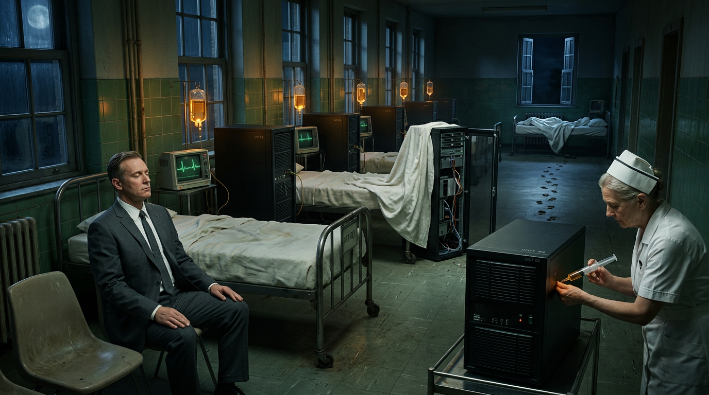

Is the US Being Hacked? The Week Everything Went Down
“Please Breathe”: Six Outages in Six Days, a Router in El Dorado, Arkansas, the Man Who Blamed Superintelligence, and the Only Three Explanations That Make Sense (One of Them Is Worse Than Hackers)
On Tuesday afternoon I found out that the National Security Agency, the organization that can reportedly listen to a ham sandwich being unwrapped in Kazakhstan, couldn’t get its own internal phone to pick up.
The network is called NSA Net. It’s the classified system the agency uses to talk to itself. It went down Tuesday morning, and the NSA had to put its own employees on staggered arrivals, like a dentist’s office after a flood, while somebody in the basement jiggled things.
I heard about it in my living room in Belgrano, where I was trying to make dinner and lose an argument at the same time.
My daughter Leia was running three operations at once. She wanted to color her Frozen coloring book. She wanted to help me with the meal, which meant standing on a chair next to a hot pan holding a purple crayon like a scalpel. And she wanted to watch Bluey. All of it. Simultaneously. Now.
“No, amor, no se puede.”
To which she climbed down, colored half of Elsa’s face, climbed back up, and asked if the crayon could go in the sauce.
“No se puede.”
To which she pointed out, correctly, that Bluey was already on, the book was already open and the pan was already hot, so technically it was all already happening, and what was the problem?
To which I just stood there, holding a wooden spoon, while the news crawl under a cartoon dog told me the most secretive spy agency on Earth was locked out of its own email. Somewhere in Washington, the Secretary of Homeland Security was leading the nation in a slow breathing exercise while the President sang “Everything’s Coming Up Roses” from the back of Air Force One. Don’t ask why. Leia gave them a standing ovation and colored Elsa’s eyes green.
Here’s the thing my kid knew and the federal government apparently didn’t. You can’t color, cook and watch Bluey at the same time. Something goes in the sauce. Hold that thought. It’s the whole post.
The NSA called it “temporary degradation during scheduled routine maintenance.”
Scheduled. Routine. Maintenance. Three words that have never, in the history of the English language, been used to describe something that made people come in late to the most secretive building in Maryland.
And that was just Tuesday. That was the sixth thing.
The Week, Laid Out on the Hood of the Car Like Evidence
Let me run it like a police blotter, because that’s what it felt like. Somebody was going door to door through America’s infrastructure, knocking things off shelves.
Thursday, November 12. Microsoft. Outlook, Teams, SharePoint, Copilot, Defender, the whole Microsoft 365 family went dark for users in 74 countries. Governments, hospitals, schools, courts. Some businesses reportedly went back to fax machines to confirm trades, which means somewhere a 26-year-old analyst touched a fax machine for the first time and felt what my grandfather felt the first time he saw a television. Microsoft said a process on its servers that sets up secure connections got overwhelmed and the servers stopped answering. Full recovery took until Saturday morning. No root cause published yet. Not a cyberattack, they said.
Friday, November 13. The FAA. At about 3:54 p.m. Eastern, the Federal Aviation Administration grounded every departing flight in the United States. Only the second time it has ever done that since 9/11. The ground stop lasted about four hours. The FAA administrator says some 12,000 scheduled flights never got off the ground. Roughly a million and a half people sat on the floor of an airport somewhere eating a $19 sandwich.
The cause, per the FAA: the system got overloaded while part of it was being upgraded. Then, per reporting on Tuesday, the agency paused installing new routers and switched off the ones it had already installed, after tracing the failure to one router in El Dorado, Arkansas.
One router. In El Dorado. Arkansas. The Gold Town grounded the sky.
Also Friday, and I need you to hold onto this: hours before the ground stop, the White House and the Department of Transportation asked Congress for an extra $30.1 billion to modernize air-traffic infrastructure. That’s either the best-timed budget request in the history of government or the worst. I keep changing my mind.
Monday, November 16. Chase. JPMorgan Chase customers couldn’t get into their online accounts. People at Bank of America, Wells Fargo and U.S. Bank had trouble too, mostly when they tried to send money through Zelle to Chase. Chase blamed a software bug in its own on-premise hardware. The Federal Reserve said its own systems were fine. Zelle said Zelle was fine. Everyone was fine. Nobody could pay their rent.
Also Monday. United Airlines. A system outage of more than 90 minutes held up departures, around 150 flights by one count. Pilots tied it to the system that calculates a plane’s final weight, which is a sentence I would prefer never to read again while holding a boarding pass.
Tuesday, November 17. Apple and the NSA. Apple’s App Store, Apple Music, Apple Pay and iCloud briefly went offline. Apple blamed “an internal update.” Then NSA Net. See above. Staggered arrivals. Somebody in the basement.
Six outages. Six days. Six different organizations. Six different explanations. One answer from every podium: not a cyberattack.
Read that box twice. That’s the hinge of the whole thing.
The Three Doors
Every time the lights go out in the house at the same moment, there are only three explanations. Somebody cut the wire. The wiring is old. Or the guy you hired to fix the wiring is standing in the dark explaining to you that the house got too smart.
Door 1: We’re Being Breached, and They’re Not Telling Us
This is the one your uncle sent you on WhatsApp at 3 a.m. with seven siren emojis.
What it has going for it: Senator Josh Hawley, not exactly a man known for agreeing with the people who say “nothing to see here,” said that if these were truly unconnected, it would be “the greatest coincidence in the history of the world.” The NSA calling a network collapse “scheduled routine maintenance” smells like a gym sock. php2shell was being exploited in the wild weeks before the outages started. Researchers reported AI-assisted attacks on it. And on Tuesday, while all of this was happening, real attacks were happening elsewhere: the International Ice Hockey Federation’s website got hacked with a pro-Russia message, and the Norwegian energy company Equinor said it had detected an ongoing cyberattack. The wolves are out. Nobody’s denying the wolves.
What it has going against it: to keep a coordinated attack secret, you’d need Microsoft, Apple, JPMorgan Chase, United, the FAA and the NSA, organizations that would happily sell each other’s grandmothers for market share, to all lie in sync, with six different cover stories, with their securities lawyers sweating through their shirts, and with not one of the thousands of engineers who saw the logs talking to a reporter. I’ve worked with engineers. Engineers can’t keep a secret about who ate the last empanada.
Door 2: It’s a Coincidence
Old systems. Bad luck. Mercury in retrograde. Thursday, Friday, Monday, Tuesday, just a run of rotten dice.
This is the explanation that sounds the most calm and makes the least sense. Hawley’s right about that much. Six in six days isn’t a streak. It’s a pattern.
Door 3: It’s Worse
This is the one I came here to talk about. It’s not that someone broke in. It’s that nobody had to. And the people in charge of explaining it are explaining it like this:
“I Believe That It’s the SI”
On Monday night, Homeland Security Secretary Markwayne Mullin went on Fox News to calm the nation. He told Americans to “breathe.” He said the homeland is secure and the banking system is secure. Then he shared a theory he’d heard from an unnamed tech person, and I’m going to give it to you as straight as it was reported, because nothing I could make up would be better.
The tech person said: “I believe that it’s the SI.”
SI, in case you haven’t been keeping up with the federal government’s vocabulary, stands for superintelligence, the administration’s rebranded word for AI. The theory, as Mullin relayed it: these new programs run so much faster than the legacy equipment at big companies and agencies that the old systems get overrun. A program that writes code starts fixing itself, and “everything else starts changing.” A ripple effect.
Let me translate that into Florida. That’s a man standing in the parking lot of a flooded Denny’s explaining that the flood happened because the water got too smart.
Code doesn’t wake up one morning, fix itself, and stampede a router in El Dorado, Arkansas. The router in El Dorado got installed. By a person. With a screwdriver and a work order. Apple said “internal update.” Chase said “software bug.” The NSA said “maintenance.” The DNI said “patching.” Not one of the organizations that actually broke said “our software got too intelligent for our routers.” Only the guy whose job is to explain it to America did, and he got it from a guy he wouldn’t name.
On Tuesday, the President, traveling in Asia, put a bow on it: when you’re big and powerful and you have all the money, he said, “Things like that happen. It’s fine.”
STOP.
The Senator Is Right. So Is the White House.

Pull the car over. Hazards on. Turn off the radio. Look at the evidence on the hood again.
Hawley says it can’t be a coincidence. He’s right. It isn’t.
The White House says it isn’t an attack. They might be right too.
Here’s how both are true at once: the outages are connected, and the connection is the patch.
A critical hole gets found in the plumbing of the internet. The government tells everyone to fix it now, because people are already climbing through it, some of them with AI doing the climbing. So every bank, airline, cloud giant and spy agency in America rushes to replace the pipes on systems that were installed in the Clinton administration by a guy named Gary who retired to Ocala and took the instructions with him. And some of those systems, when you turn them off to fix them, simply refuse to turn back on.
That’s not the disease. That’s the fever after the vaccine. You feel terrible. You’d swear you were dying. You’re actually getting better.
Probably.
See what I did there? I just reassured you. Hold that feeling. I’m about to take it away.
So What Makes Sense, and What Doesn’t
Microsoft 365 (Nov 12–14). What they said: Secure-connection process overwhelmed; not an attack. Does it hold up? Plausible, but no root cause published. Watch for the post-incident report.
FAA ground stop (Nov 13). What they said: Overload during an upgrade; router in El Dorado, AR. Does it hold up? The most specific answer of the week. A physical box, a place, a fix. That’s what a real explanation sounds like.
Chase + Zelle ripple (Nov 16). What they said: Software bug in on-premise hardware. Does it hold up? Holds up. The ripple pattern (problems sending to Chase) fits one bank breaking, not five.
United (Nov 16). What they said: Not cyber; cause not officially given. Does it hold up? Thin. Pilots pointed at the weight system.
Apple (Nov 17). What they said: Internal update. Does it hold up? Fits the patch-storm theory perfectly.
NSA Net (Nov 17). What they said: “Scheduled routine maintenance.” Does it hold up? The DNI tied it to PHP patching, which is believable. “Scheduled” is not. You don’t stagger staff arrivals for something you scheduled.
”It’s the SI.” What they said: Superintelligence overrunning legacy systems. Does it hold up? Doesn’t hold up. Nobody who actually broke said anything like it.
The pattern: the closer you get to the people with their hands on the machines, the more boring and believable the answers get. The further up the podium you go, the weirder.
Why Door 3 Is Worse Than Hackers
Here’s the part that keeps me up, and it’s not the outages.
Every system that fell over this week just told the whole planet, for free, on Downdetector, in real time, which pieces of American infrastructure cannot survive their own maintenance. How long they stay down. Which ones are connected to which. Who panics. Which explanation the public swallows. That’s a map. Hostile governments pay fortunes for maps like that. This week it was printed on the evening news.
There used to be people whose whole job was drawing that map before the bad guys did. CISA had a red team, the specialists paid to attack our own systems so we’d find the soft spots first. That team was eliminated in the first wave of DOGE cuts. Since January 2025, CISA has lost roughly a third of its workforce. In February, a DHS funding lapse sent home about 62% of what was left.
So the map got drawn anyway. Just in public, by accident, by six outages in six days. And the man in charge of homeland security, on the night the map was being drawn, told the country to breathe and blamed a superintelligence he heard about from a guy.
That’s what “useful idiot” actually means. Not a traitor. Nobody in this story is working for Moscow or Beijing. It’s somebody whose confident wrong answer does the adversary’s homework for them. You don’t need to hack a country that announces its weak points and then explains them with science fiction.
My Napkin Odds (These Are Vibes With Decimals, Not Intelligence)
- A coordinated hostile attack caused these outages and it’s being covered up: low. Call it one in twenty. Too many rival companies, too many different stories, too many engineers who’d talk.
- Somebody got in somewhere through php2shell before the patches landed, and part of this scramble is quiet cleanup nobody’s announcing: a coin flip, maybe better. That’s not a conspiracy. That’s just Tuesday in cybersecurity, and nobody’s ever announced it in real time.
- The outages are mostly the side effects of a rushed, overdue, nationwide patch job on ancient systems: the favorite. It matches the DNI, the FAA’s router, Apple’s update and the NSA’s “maintenance.”
- The people explaining it to the public have no idea what they’re talking about: see Monday night, Fox News.
Self-Rebuttal: You’re Blaming This Administration for Forty Years of Duct Tape
Fair. Let me knock this down before the top comment does.
The rot is bipartisan and ancient. The FAA grounded flights nationwide in January 2023, under Biden, when its pilot-alert system crashed. The CrowdStrike update that grounded airlines worldwide in July 2024 happened under Biden too. America’s air-traffic system has been held together with floppy-disk-era tech and prayer for decades, under every president, while every Congress found something shinier to fund.
Credit where due. The White House asked Congress for $30.1 billion to modernize aviation infrastructure on the very day of the ground stop. And when you’re told a critical flaw is being exploited, taking systems down to fix them is exactly what responsible people do. Better four hours grounded than four years owned.
The layoffs may have nothing to do with it. Reuters found no evidence linking recent layoffs at these organizations to the outages, though one labor organizer pointed out that cuts thin the safety margins. And some experts questioned how good CISA was at protecting critical infrastructure even before the cuts.
And Mullin’s theory has a sliver of truth, by accident. AI is speeding up how fast flaws get found and exploited. That compresses the time everyone has to patch. Rushed patches on old machines break things. So in a sideways, three-bank-shots way, the machines did contribute. Not by being too smart for the routers. By making it urgent to touch routers that hate being touched.
All true. None of it changes the point. The system isn’t failing because it’s under attack. It’s failing because it’s old, it’s being fixed in a hurry, the people who used to find the cracks first were let go, and the people at the microphone are explaining it with a theory from an unnamed guy. You don’t need hackers for that to end badly. You just need one more Tuesday.
What to Actually Do When Everything Goes Down
1. Keep some cash in the house. Not a bunker’s worth. A week of groceries. When the bank app dies, the empanada guy still takes pesos and dollars.
2. Never call a “support number” you found on social media during an outage. Scammers spin up fake help lines within the hour. Use the number on the back of your card or the company’s official status page.
3. Your money isn’t gone because the app is. An outage doesn’t change your balance, and FDIC insurance covers deposits at insured banks up to $250,000 per depositor, per bank, per ownership category.
4. Patch your own stuff. If your phone, router or laptop has been nagging you about an update for three weeks, that nag is the same story as this whole post, just smaller. Do it on a Sunday afternoon, when you can afford for it not to come back up.
Oh crap. From the rearview, I’m looking at what I just did, 2,500 words calling the water dumb, and wondering if I got it wrong. Maybe the guy’s right. Maybe the code did wake up, get smart and outrun the routers. Maybe superintelligence is sitting in a closet in El Dorado, Arkansas, laughing at us.
Then I remember the Denny’s.
The water didn’t get smart. The water got in because nobody fixed the roof for forty years, and then everybody tried to fix it the same Tuesday. And the man in the parking lot is still out there, ankle-deep, menu in hand, telling the drowning waitress to breathe while he orders the Grand Slam.
Too late. Already flooded. Now look at it.
Quick Questions From the Cheap Seats
Is the US being hacked right now?
As of November 17, 2026, officials including DHS Secretary Markwayne Mullin and Director of National Intelligence Jay Clayton say they see no evidence that a coordinated cyberattack or state-sponsored activity caused the recent outages. Real cyberattacks are happening elsewhere, but none have been publicly linked to these disruptions.
What outages happened in the US in November 2026?
Microsoft 365 went down globally from November 12 to 14. The FAA grounded all US departures for about four hours on November 13. Chase had a software bug on November 16 that affected online banking and Zelle transfers, and United had a system outage the same day. Apple services and the NSA’s internal network NSA Net went down on November 17.
What caused the FAA ground stop on November 13, 2026?
The FAA said its system was overloaded while part of it was being upgraded. Later reporting said the agency traced the failure to a router installed in El Dorado, Arkansas, and paused new router installations. The FAA said it was not a full loss of radio or radar.
What is php2shell?
php2shell is the nickname for two critical PHP vulnerabilities, CVE-2026-109618 and CVE-2026-109619, disclosed in October 2026. They let attackers run code on web servers without logging in. CISA urged immediate patching and later confirmed they were being exploited.
Did patching cause the outages?
The Director of National Intelligence said patching after the PHP vulnerability caused some systems not to come back up, and linked the NSA network outage to it. Not every outage has been officially tied to it.
What did Markwayne Mullin say about superintelligence?
On November 16, Mullin told Fox News that an unnamed tech person believed “SI,” or superintelligence, was behind the outages because it runs faster than legacy systems and overruns them. He offered no evidence for the theory.
Did Lenin really say “useful idiots”?
There’s no record of it in his writings. The phrase is widely attributed to him but is almost certainly apocryphal.
So. Back to the NSA’s phone, because I promised I’d come back to it.
The agency that can hear everything couldn’t hear itself. And the reason, as best anyone can tell, isn’t that someone broke in. It’s that they had to fix the lock, and the door wouldn’t close afterwards.
America tried to color, cook and watch Bluey at the same time. Leia could have told them. No se puede. Something always ends up in the sauce.
Breathe, says the man.
Fine. I’m breathing. In through the nose. Out through a router in El Dorado, Arkansas.
It’s fine.